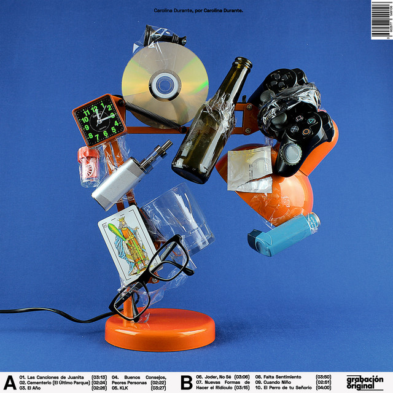
Carolina Durante
25 April 2019
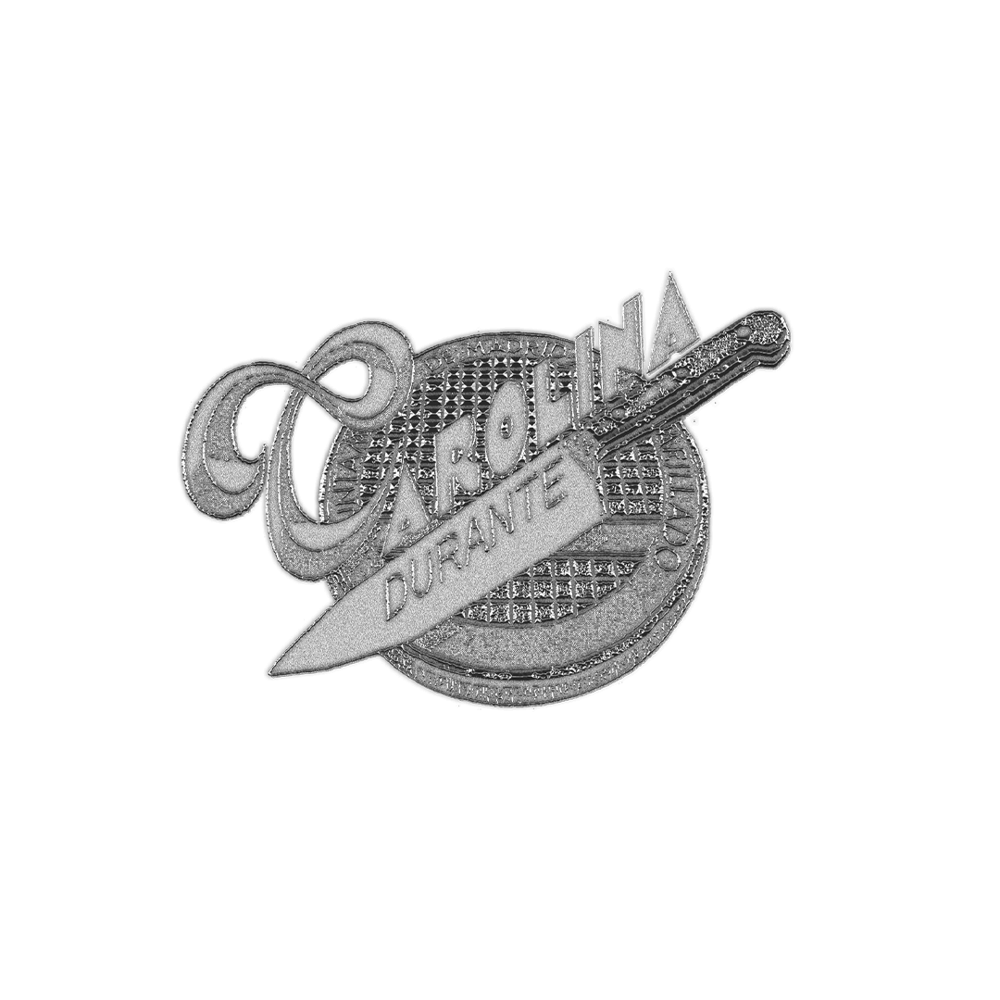

Carolina Durante is a Spanish indie rock band formed in Madrid in 2017. The group quickly gained attention thanks to their energetic sound, sharp lyrics and unmistakable attitude. Combining influences from alternative rock, punk and indie music, Carolina Durante have become one of the most important bands of the new generation of Spanish rock. Their breakthrough came with a series of successful singles that connected with young audiences through their honest and direct storytelling. Since then, they have released several critically acclaimed albums, including their self-titled debut album, Cuatro Chavales and Elige tu propia aventura. Each project has helped establish the band as a major force in the Spanish music scene. Known for their powerful live performances, Carolina Durante have performed at some of Spain's biggest festivals and venues. Their music explores themes such as youth, relationships, uncertainty and modern life, combining catchy guitar riffs with memorable melodies. Today, the band continues to push the boundaries of contemporary Spanish indie rock while maintaining the raw energy and authenticity that first made them popular.

25 April 2019
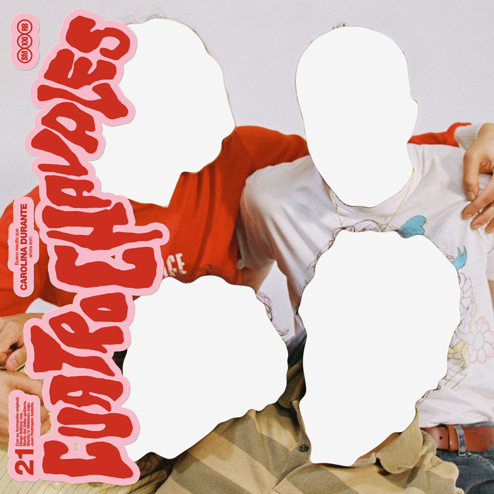
27 January 2022
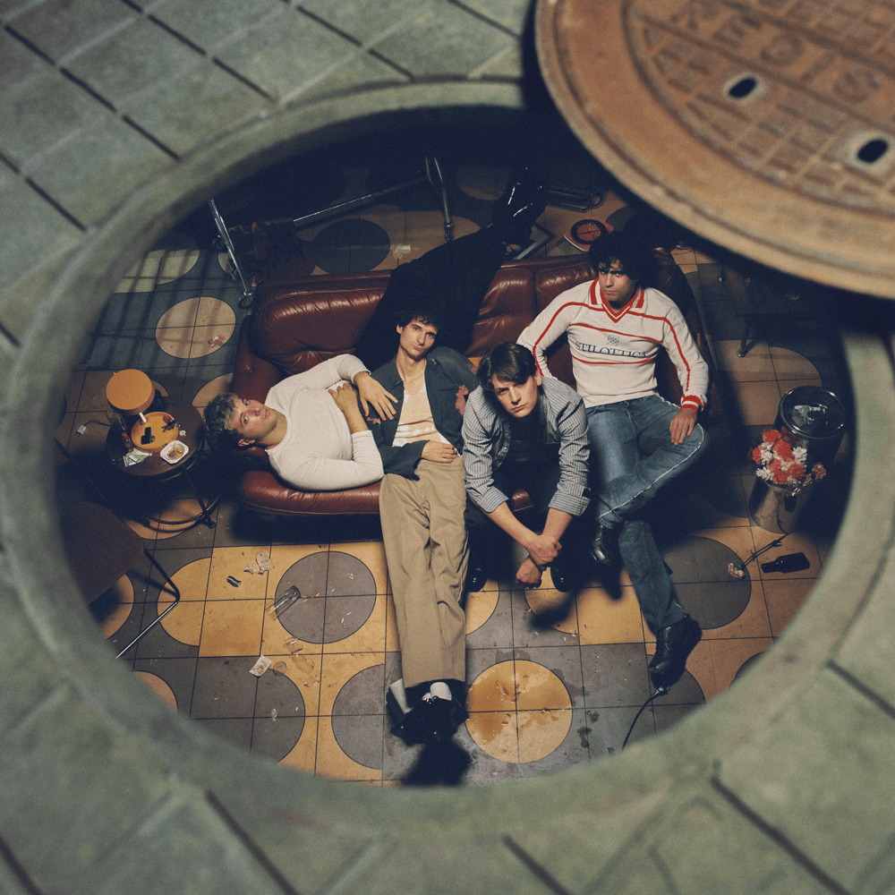
25 October 2024
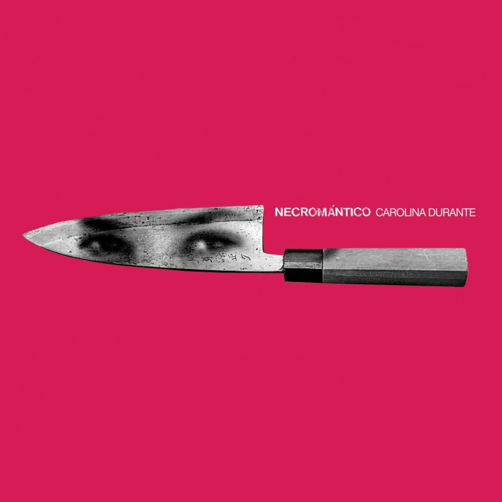
3 October 2017
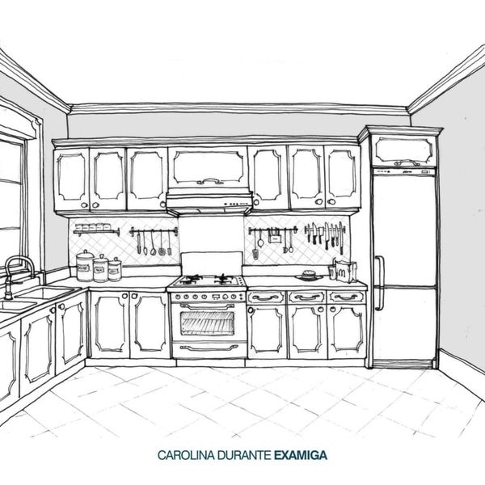
17 April 2018
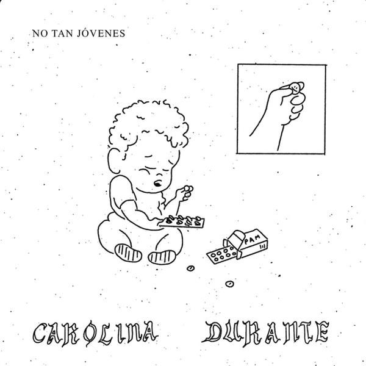
27 December 2019
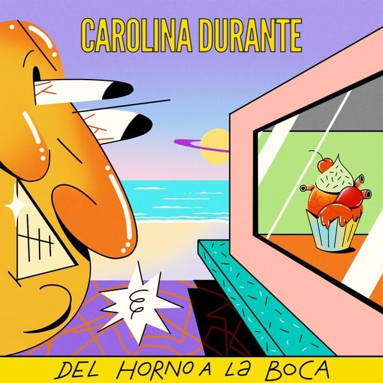
27 August 2020

Lead Vocals
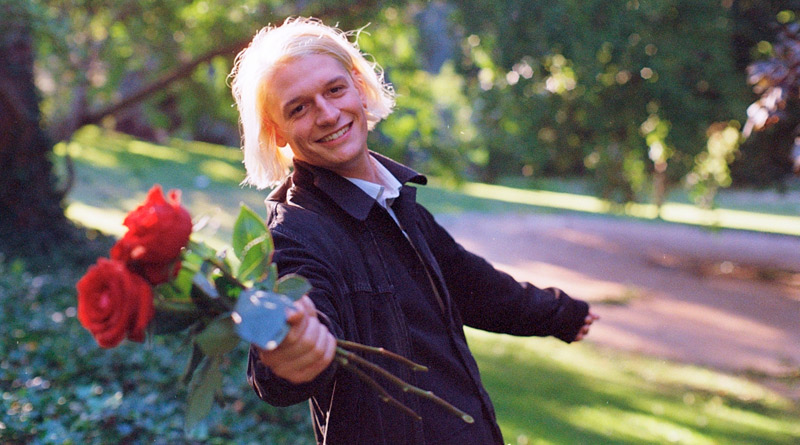
Guitar
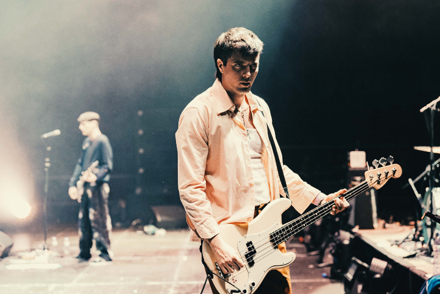
Bass
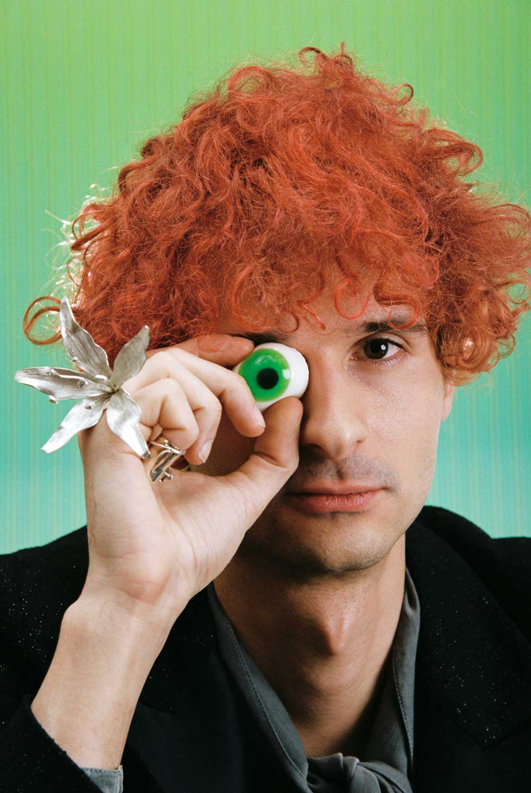
Drums